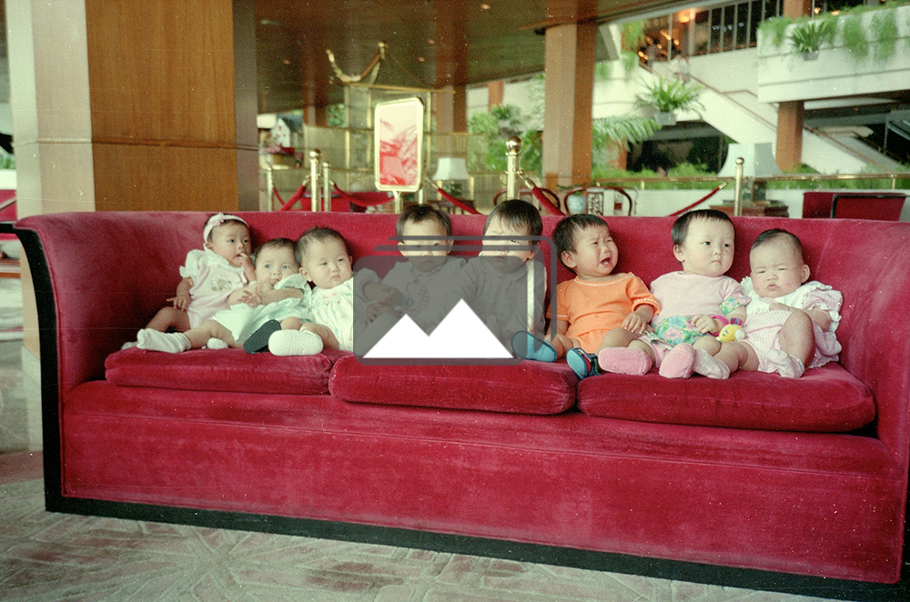

Did the baby cry when the hands holding her set her down? Or was she sleeping so soundly that when placed gently on the ground she did not wake up? Swaddled for her journey on this September day in 1996, a cool morning breeze might have swept across her face as she was being carried in darkness from the place where she was born to this place where she would be abandoned. Was she left along the well-trodden path leading to fields so that farmers heading there would find her? Or near the doorway where a childless family lived? Or was this day-old infant set down along the side of the road near the bridge that Xixiashu Town’s factory workers crossed at sunrise? When the rising sun wakened her, did she cry to be held and fed?
Were those who brought her hiding nearby, fulfilling the promise given to this baby’s mother to stay close by until her daughter had been found? Or did this mother travel with her baby, and was she now fighting the urge to soothe her baby’s cries? Maybe her in-laws’ exhortations reminding her of the need to bottle up her emotions were fortifying her, giving her strength she needed to resist the maternal tug.
Soon, new hands held the baby girl – a farmer’s hands, perhaps. As word spread of her finding, someone in town summoned the police. In time, those who’d carried her here would watch as a male officer placed the bundled baby in the outstretched, cradling arms of his female colleague. As the police car drove away to the Children’s Welfare Institute in the nearby prefecture city of Changzhou, did those who’d stayed out of sight move into the road to lock their eyes on the back of that car, watching in silence as it vanished from view?
Abandonment Papers Clues to a baby’s origin.
In walking away, did an irrepressible replay of the baby’s cry trigger tears that each wiped away? Approaching home, they knew no one would ask about the daughter they had left behind. Before going inside perhaps they paused to share a moment with the only others who would remember the sound this baby made before she was gone.
No note was pinned to this baby’s clothes offering clues about when or where she was born or to whom. Because abandoning a child in China is illegal, hints of identity are rarely left. Unsigned messages sometimes are, ones orphans might someday find in their official orphanage files. Her family likely wasn’t willing to risk the severe consequences that local birth planning authorities might have imposed. If her parents had tried to raise her as their second child (more than one was too many), the fine they’d be forced to pay would have been steep, along with other punishments.
Perhaps the family had talked during the pregnancy about wanting to keep this baby, but once she was born the threat of her father losing his job seemed too devastating for them to absorb. Even if they’d pooled their resources, her family might not have had the money to pay the fine, usually several times a family’s annual income. Maybe rumors they’d heard of a family’s house being razed when they’d tried to hide a second child from local birth-planning cadres frightened them.
For one reason, or for many, this girl’s family hid their identity – and hers.
Strong on Man, Light on Woman
In Jiangsu province, where this abandoned baby was born, one child was the only child that most couples were allowed to raise in the 1990s. It didn’t matter whether a couple lived in a concrete farmhouse or in a mirror-walled apartment on the top floor of a city high-rise. The one-child policy placed the same procreative restrictions on all residents of this generally well-to-do East Coast province as it did on residents in the municipalities of Beijing, Tianjin, Shanghai and Chongqing, and in Sichuan province, as well. In densely populated Jiangsu province, one child for each couple had been the rule since the central government had launched its strict population control policy in 1979.
A second child was too many unless a couple fell into one of Jiangsu’s 14 exemptions authorized by its family- planning authorities. If either of this newborn’s parents had been raised as an only child and had a rural hukuo (household registration), they would have been eligible. But few men or women of parenting age were raised as an only child. Or if a couple lived with the wife’s parents, they could qualify, yet few couples did since being part of the husband’s family was an act of filial piety. If the father had only one sister and if she was raising only a daughter, then a second child would be a possibility. But this worked only when the second child was a boy. Circumstances such as these offered exemptions, but few couples qualified. For those who did, birth-planning officials had to approve the pregnancy for the baby to receive a hukuo and be a legal resident. Without a hukuo, attending school or receiving public services would not be possible. To circumvent such challenges, families sometimes would hide an over-quota child with relatives or friends to raise.
Maybe this abandoned newborn was her parents’ first child and they wanted to raise her. But her paternal grandfather, who might have been the one to name her a month after birth, may have insisted that his son’s only child be a boy to carry on the family lineage. It would be this grandson’s duty to support his parents in their old age; by then, this son would be married and his wife would help him demonstrate filial piety, just as his mother was doing in caring for him, her husband and her in-laws. As a wife, she was no longer considered a member of her natal family’s home. By bearing a son, this couple would guarantee the financial security that farmers in China need for their old age, along with assuring the essential care that his future wife would provide.
In China’s rural provinces, located primarily in the West and South, birth-planning policies often come with a “1.5” designation, known as the “one-son-or-two-child” policy. This means that if a daughter is born first, a couple can try to have a son after a specified interval. If that child is also a girl, then by abandoning her the couple retains the possibility of bearing a son. Given enough attempts (followed by more abandonments if the baby is a girl), the “perfect family” – a son and daughter – could be theirs. A majority of eligible rural couples had two children. However, when a couple’s first child is a boy, a second pregnancy is not allowed unless the couple qualifies for and receives an exemption.
She Can't Be Our Baby
A girl among many boys
Swaddled Newborns
Reuters / Patty Chen
On November 11, 1992, Yuan Mengping was born in Xiaxi’s main hospital at the same time as eight other babies, all boys. Ultrasound machines were used there and then, as they were in other clinics and hospitals in China, enabling doctors to determine the gender of the fetus. In 1994, lawmakers in Beijing prohibited “techniques to identify the fetal sex for non-medical purposes.” But that law didn’t stop couples from convincing poorly paid rural doctors to help them to avoid having a daughter when they wanted a son. Mengping’s mom hadn’t pressed her doctor to find out, though she remembers feeling that her baby was a girl. When she told her husband this he’d said he preferred a daughter who would not be “as naughty” as a son.
When Mengping was brought home, her grandfather was very disappointed. With all of the baby boys at the hospital, he could not believe that his son was bringing into their family the one girl. Still, her parents raised Mengping as their only child. In June 2014, she received her degree in business Japanese from Changzhou University. Her grandfather did not live to see her earn her university degree, something no male (or female) in his family had done before. He died when Mengping was five months old.
Exemptions vary among China’s provinces. Family Planning Commissions in each province establish and revise their own one-child policy regulations, including a range of exemptions that are adopted by provincial People’s Congresses. In the provincial policies in effect during the late 1990s, around the time when this newborn girl was abandoned in Xixiashu, four scholars have identified 22 unique exemptions out of the 100 or so that provinces issued that enabled a couple to apply to have a second child.
In 21 provinces and four provincial-level municipalities, either a one-child or 1.5-child policy governed the size and composition of every family. Five provinces permitted all of the rural couples to have two children. In the 25 regions where stricter policies were in effect, any married couple in which the mother and father had been raised as an only child would be able to have more than one child. (Few qualified at this time.) Then, in the 19 provinces governed by the 1.5 rule, when a girl baby came first the rural couple could have a second child, but only if they waited for a specified interval between births.
Consistent across China – as the one-child policy matured – was the imposition of a “social maintenance fee” on families that raised children beyond their prescribed procreative limit. Birth-planning cadres could also apply their authority in ending a mother’s subsequent pregnancy, or in insisting that she be sterilized. Or they could seize the over-quota child.
Since the 1990s, China’s increasingly lopsided male-to-female ratio at birth has guaranteed it the top global spot in this unenvied category. In 2014, its overall sex ratio at birth (SRB) was 115.9 boys for every 100 girls, which is lower than in previous years. It was 119.45 in 2009, and then hovered around 118 from 2010 to 2013 – remaining a lot higher than Korea and India, perennial rivals for the top slot. Reportedly, some provinces and regions in China have SRBs that are even more abnormally high with 150 boys born per 100 girls in rural areas.
Researchers reveal that in places where couples can have a second child if their first is a daughter, the SRB of the first-born children is nearly normal; it is with successive children that the SRB increases significantly. In his 2011 law journal article “The Missing Girls of China,” law professor David M. Smolin wrote, “As a matter of scale and sex-ratio imbalance, China has the most significant missing-girl problem of any nation in the world.”
Our timeline, "From Mao to Now," portrays China's population policies from 1949 to 2015.
By hiding over-quota daughters, abandoning baby girls, and ending a pregnancy with a female fetus, tens of millions of China’s girls go “missing” from its population. It is impossible to know just how many, given the various ways that birth families and birth-planning officials make them disappear.
Each new estimate of “missing” girls seems to lead to the newer number being disputed. As scholars look back at China’s population problems and the one-child policy as its solution, they conclude that such a wide-net, coercive approach wasn’t necessary. During the 1970s, China had cut its fertility rate in half through more “voluntary” compliance. Post-1980 patterns of declining fertility rates in Asian countries lead scholars to believe that China would have experienced a similar downward trend without resorting to the authoritarian means that have led to the country’s counter-productive gender imbalance.

Lonely Childhoods and Missing Girls
As China’s successive boy-heavy generations reach the typical age of marriage, worries escalate about rippling consequences of the nation’s skewed gender ratios. By 2020, the fear is that more than 30 million men will not be able to find a wife among China’s women; “brides” are already being trafficked into China from bordering countries such as Vietnam and Cambodia. As a consequence of the one-child policy, China’s extended family now typically exists in a
4-2-1 configuration with four grandparents, two parents, and one child upon whom the obligation for caring for elders resides. Elder care and old-age security are regarded in China as the family’s responsibility; once distributed among many children, with sons seen as provides (and their wives as caregivers), the absence of a son and the presence of an only child complicate this arrangement. At the same time, China’s young labor force is shrinking.
Awareness of these demographic challenges led China’s government to end the one-child policy in October 2015. In the minds of many close observes, this change was long overdue. The unanswered question is how many young people, raised as only children, will decide to raise two children of their own.
In 2014, China’s Total Fertility Rate (TFR) hovered near its all-time low with1.4 children estimated per woman. As this rate decreases steadily, China is being pushed closer to the tipping point that social scientists call the “low fertility trap.” As countries reach 1.4 TFR, it’s tough, if not impossible, to pull out of this downward spiral, as several European countries are finding out. When in 2014 more families had the opportunity to have a second child, the number of them registering to do so was less than officials expected. Estimates are that from 800,000 to one million of China’s 11 million eligible couples filled out the necessary papers – fewer than 10 percent of those who could. As one Beijing mother told reporter Alexa Olesen, citing child-rearing constraints faced by wage-earning parents who live in costly cramped apartments and are accustomed to raising one child, “having a second kid isn’t as simple as adding another pair of chopsticks.”
Lightly Regarded
On the September day when the newborn girl from Xixiashu arrived at Changzhou’s orphanage, the staff gave her a name. Like other babies at this Children’s Welfare Institute – nearly all girls – her surname became Chang. The name setting her apart was Yuchang. She slept on a thin mattress with a flat pillow. When awake, she stared at her crib’s blue wooden panels and played with the “toys” she had: her feet, hands and lips. Nurses fed her a bottled formula of milk and rice. After she’d digested her food, nurses would lift her up and set her onto a potty.
Ten days after Yuchang reached Changzhou, police from Xiaxi Town brought a three-day-old girl to this same orphanage. They’d found her in a farming town the same distance from Changzhou’s center as Xixiashu but in a different direction. The staff named the new baby Yulu. Chang Yulu spent her days in a crib near Chang Yuchang, and the girls’ daily lives went along unmarked by change.
Some Chinese families celebrate a baby’s arrival when the moon has completed a full cycle after the baby’s birth. Yet for these two girls, one month came and went without notice. No eggs were dyed red to symbolize their family’s happiness and good fortune. No peanut cakes appeared in the shape of a tortoise with its intricate shell displaying a mother’s delicate handiwork. Nor was a red envelope with “lucky” money placed in either girl’s crib. No one had cut their hair, wrapped it in red cloth and sewn it onto their pillows to calm them. What might have been a welcoming time was just another day in the orphanage.
By three months, each girl had passed her physical exam, a step along her road to adoption. Each girl also had her photo taken; in Yulu’s picture, her exceedingly round face pops out from a tattered red sweater. With photos taken, these two girls would be placed among thousands of other healthy girl orphans deemed eligible for adoption. A red stamp on their records signified an official sign-off by those caring for them in Changzhou. Soon the girls’ files were being processed at the China Center for Adoption Affairs (CCAA) in Beijing, the government entity that oversees adoption throughout China. When paperwork from potential adoptive families reached the CCAA, these two sets of files — of Chinese children and foreign moms and dads — went to the “matching room.” Families know nothing about the methods employed to match them with their children. A sense of mystery about their pairing endures.
Adoptive Mother
Near Boston, Massachusetts, China Adoption with Love (CAWLI), an adoption agency with a singular focus on China, had sent my files to the “matching room.” For as long as I could remember, I’d wanted to be a mom, but it had never happened. A marriage failed when I was in my twenties, and then a hopeful relationship in my late thirties dissolved due to our disagreement about having a child. Now, at the age of 45, this adoption was my opportunity to raise a daughter on my own. Single friends of mine had adopted from China, opening my eyes to this possibility.
At around the same time, CAWLI also sent to China paperwork belonging to Judith, a single woman about my age but differing in her parenting circumstance. She was co-parenting a two-year-old daughter whom she’d also adopted from China. The girl she’d bring home this time would be that daughter’s younger sister. Each of our files contained financial data, answers to questions about our lives, a head shot, and a social worker’s report about our fitness as parents – mine needing to be more imagined than hers.
Once the CCAA in Beijing had processed our files, CAWLI would call each of us to let us know the baby with whom we’d been matched. In the mid-1990s, single foreigners could adopt Chinese orphans even though out-of-wedlock births in China bore such an unbearable stigma that unwed mothers were often forced to abandon their babies. In our adoption group, half of us were adopting as a singe parent. A few years later, the Chinese amended their adoption rules to make it extremely difficult, and then years later nearly impossible, for an unmarried foreigner to adopt.
Meeting Our Daughters Most of the parents in our adoption group had never been to China before. Once we met our daughters, we knew we’d be connected forever to this place that was so different than our American home.
On June 1, 1997, Judith and I, along with six other prospective adopting families – two other single women and four couples – boarded a plane at Boston’s Logan Airport. After crossing 12 time zones, we landed in Beijing, rested briefly, and then caught a flight to Nanjing. From there, an hour-long bus ride brought us to Changzhou, where five of the families would meet their babies, including Judith and me.
Soon we’d be holding our daughters Yuchang and Yulu for the first time. On our way to them we kept peeking at tiny headshot photos we had of our waiting children, the photos that the CCAA sent us after we’d been matched.
In Changzhou, we went by bus to the city’s orphanage on the banks of the Yangtze River. After we sipped tea and ate lychee nuts in a second-floor waiting room, the nurses who had taken care of our daughters carried them to us. Some of the babies cried as new hands held them, but not Yuchang or Yulu. Judith and I held, fed and entertained our babies; I’d brought a fuzzy animal finger toy anticipating this moment with Yulu, so we played with that. With the girls on our laps, we signed the first of many adoption papers. The doctor who had traveled with us to China examined each girl – all passed – and then the caregivers took our babies back to their cribs.
Chang Yulu (front left) and Chang Yuchang (behind her) at Changzhou’s orphanage.
We had more papers to sign in Nanjing, the provincial capital, to make these girls officially our daughters. They couldn’t come with us. But before we left, the orphanage staff let us see where the babies lived in their cribs – a visit few foreigners have the chance to make. There, we said goodbye to our daughters. Not until late the next evening, and only after being respectful guests at an excruciatingly long banquet hosted by the orphanage’s director, did Judith and I get to carry our sleepy girls into our mini-bus and return to the hotel for our first night as families.
The next stop for our adoption group was Guangzhou, where we walked through the requisite steps needed to bring the girls home to America. At the U.S. Consulate, our daughters’ new names — Jennie and Maya — were printed on their entry visas. With the consulate visit behind us, we set our babies in a row on the red couch in the lobby of the White Swan Hotel, where most adoptive families stay given its location next to the consulate. We took the classic adoption group photo of the row of “sisters” against the velvety red backdrop.
Soon we were following the path already taken by 10,600 American families who had brought their children home from China before us. But first, we had some family sightseeing to do at Beijing’s Forbidden City and Temple of Heaven, and a Great Wall to climb.
In 1988, the U.S. State Department issued 12 immigrant visas that enabled the first Chinese babies to come home with their American families. Four years later, China established official regulations and set in motion the process that governs adoptions from its overcrowded and underfunded orphanages. Within a few years, hundreds of prospective parents, mostly Americans, were traveling to China in carefully orchestrated two-week trips to adopt children. By the late 1990s, thousands of American families were adopting children from China every year. By the early 2000s, China had become the leading destination for foreign adoptions by Americans.

"Sisters" Through the Years
Through the decades, foreign families usually brought daughters home. However, by the early 1990s ultrasound machines were becoming ubiquitous in China. This meant doctors could determine the gender of a fetus. Couples often used cash gifts to persuade them to reveal the gender even after Chinese lawmakers prohibited the sharing of such information for “non-medical purposes.” Knowing the gender before birth resulted in fewer girl babies being born – and thus fewer being abandoned. During the past two decades, the proportion of boys living in orphanages has steadily increased, as has the percentage of orphanage children with disabilities. The two circumstances are related.
In 2005, a baby trafficking scandal erupted. Chinese officials arrested orphanage staff and traffickers who had been kidnapping and selling girl babies to orphanages. The next year, a court found the traffickers guilty and sent them to jail. Their arrest and trial placed a media spotlight on troubling practices in some of China’s orphanages. In the early 1990s, BBC reporters had shot video in orphanages and then broadcast scenes of extremely negligent care of the babies; that report had led to improvement in care. When the news about this trafficking scandal went global, Chinese officials responded similarly. Beijing officials imposed restrictions to deter such trafficking. What had been a steady flow of healthy baby girls to the orphanages system was substantially reduced.
Today, an estimated 98 percent of children in China’s orphanages have a disability. Many of these disabilities can be remedied with medical care and therapeutic treatments that foreign parents could provide. Yet fewer foreigners are eligible to adopt from orphanages as restrictions have been tightened for foreign families and eased for the Chinese. This paired circumstance is straining the capacity of orphanages to care for the children now in their cribs. Recently, Chinese officials set up protective “baby hatches” where families can safely and anonymously abandon a child; most of the babies left there are disabled. In some cities, baby hatches received so many disabled babies so quickly that orphanage staff became overwhelmed and officials had to close the hatches.
Since foreign adoptions began (unofficially) in the late 1980s, two-thirds of children adopted from Chinese orphanages have gone to new homes in America. Today, more than 80,000 Chinese adoptees live in America and an estimated 40,000 live in other countries. The journeys of these abandoned Chinese girls rank among the largest-ever global migrations based on gender. Sadly, only the ongoing human trafficking of women surpasses their migration in scale.
Coming to America
Waves of Chinese immigrants have arrived in the United States since the mid-19th century. Early on, Chinese laborers helped lay the tracks for America’s transcontinental railroad, farmed in California, and worked in factories. They worked mostly menial jobs, through some set up shops and businesses in insulated urban neighborhoods known as Chinatowns. The first of these was established in San Francisco in the 1860s.
In 1882, Congress passed the Chinese Exclusion Act prohibiting the immigration of Chinese laborers – the first such law based on ethnicity. After successive revisions, this law was finally repealed in 1943. Two decades later the 1965 Immigration and Nationality Act gave Chinese the ability to reunite with their families in America. And today, China sends more of its young people to United States colleges and universities – and recently to high schools, too – than any other country.
A toy store in San Francisco’s Chinatown, circa early 1900s. Arnold Genthe
No matter how or why Chinese immigrants came to America, many who stay continue to speak their native language as they settle among people with whom they share cultural traditions. This has remained a familiar pattern even as America’s notion of itself as a melting pot of assimilation has given way to a wider appreciation for the mosaic of multicultural adaptation.
The experiences of Jennie and Maya – and other Chinese adoptees who have immigrated to the United States – bear little resemblance to those of earlier Chinese immigrants. As adoptees, they did not come to the United States to reunite with their Chinese family; they left that family in China. Nor did they decide themselves to leave the country of their birth to live in another. After the girls had survived abandonment and stayed healthy through infancy – not something every abandoned baby managed to do – Chinese officials determined their fate.
No longer would the babies hear the familiar sounds of Mandarin spoken around them. The faces staring into theirs would look very different. They’d be surrounded by unaccustomed aromas in their new homes. The tempo and patterns of their daily routine would feel different, too.
As Jennie and Maya soon discovered, their families’ financial circumstances and living situations erased the usual deprivations many immigrants confront. Tucked into relatively well-off communities, Maya and Jennie’s primary task was to figure out how they fit into their new multi-ethnic families. The ways they – and their parents – found to adapt helped shape each girl’s sense of identity as she moved through childhood, into adolescence, and toward adulthood. Jennie and Maya grew accustomed to the duality of being seen by others as Chinese even though they are fully American.
Jennie grew up in a leafy suburb of Boston in which 90 percent of residents are Caucasian. At school, sciences drew her interest and Jennie studied French, not Mandarin, which wasn’t offered at her regional high school. Eighty percent of her fellow students were Caucasian, leaving her in its minority population of Asian- and African-Americans. Being raised in a Jewish home, Jennie also studied Hebrew. When it was time to celebrate her Bat Mitzvah, her adoption group “sisters” were there with her. Jennie played flute in the school band and joined STOP (Students Together Opposing Prejudice). Although she had visited Israel, Jennie had not returned to the land of her birth since our adoption group embarked on its journey home.
Maya grew up in Cambridge, a city crowded with universities and colleges and a subway ride across the Charles River from Boston. At an early age, she fell in love with dancing; on weekends, she learned Chinese dance and after school she studied ballet. In high school, she devoted afternoons to her school’s Modern Dance Company; in her senior year, she was co-captain of this performing troupe. Her school offered Mandarin, so she studied it as long as there was a class to take. With varied hues of skin tones, students at her school displayed the enormous diversity that grew out of family roots in 83 different countries. At 37 percent, Caucasians in her school were a minority, while 11 percent of her fellow students were Asian – a fair number of whom were adopted. Nearly half of the students in her large urban high school qualified for free lunch due to economic hardship.
Return to the Birthplace
The first time Maya returned to China she was seven. We went for three weeks on a tour of our making and spent time in the company of Chinese friends, mainly in Beijing, Shanghai and Hangzhou. Toward the end of our time in China, Maya and I boarded a train in Shanghai and three hours later arrived in Changzhou, the stop just before Nanjing. Maya carried a scrapbook of childhood photos of her and her Changzhou “sisters”– the four others adopted from there when she was. She’d made it to leave with the orphanage staff along with toys we brought for the children. Maya wandered among their cribs and held a baby before we attended a luncheon banquet hosted by the same director who’d been there for her adoption.
The next morning Maya and I drove from Changzhou to the police substation in Xiaxi Town that offered the only connection to her abandonment on her adoption papers. I hoped to be able to meet the officers there and thank them for getting Maya to the orphanage. Perhaps one of the police officers might remember her from that September day.
Tracing Maya's Abandonment The police substation in Xiaxi Town is the only hint we have of Maya’s beginnings. When she was seven, we went there seeking a connection to her past.
They didn’t, since none of them was working as a police officer seven years earlier. Still, they knew how things happened when abandoned babies were found. At my urging, they told us what happened. Our translator relayed their words. As he did, Maya remained silent and scared, clasping her hands like an unmovable toy soldier. Only when a male officer mentioned that a woman cradled each of the babies on the drive to the orphanage — and then a female staff member reached down to hug Maya — did I see my daughter smile.
Still, her frightened look told me I’d made a mistake in bringing her to hear what she was hearing. She wasn’t ready, and I hadn’t helped her to prepare in ways that I should have.
Back in America, Maya spent time with Jennie mostly when our eight adoption group families came together. We’d meet at a Cape Cod hotel in January and spend a day on a Cape Cod beach each summer. As time passed, the size of our reunion group shrank to a smaller core, with Jennie and Maya staying in the mix. In their early teens, Facebook became a way to keep in touch, though it never could replicate being together. Sometimes Jennie and Maya would spontaneously run their hands along the back of each other’s head searching for the flat spot. In their web of arms, an invisible thread of memory connected them to the months they spent lying in orphanage cribs, their supine position flattening the roundness of their heads. When they were 16 years old and sitting in a hotel room overlooking Shanghai’s People’s Park, Jennie and Maya instinctively reached over to touch their flat spots. This time they wanted Veronica to feel them, too. She was a Chinese-American friend who was traveling with them to film their journey. The girls felt each others’ heads and noticed that Veronica had no flat spot. She had grown up with her parents in America and had never slept in an orphanage crib. The girls giggled at how silly this would look to anyone watching.
This light moment gave Maya and Jennie a needed respite from their piercing conversation of a few minutes earlier. They’d talked about a newborn in China who was discarded – a baby boy who might have died inside a pipe but was rescued instead. Maya and Jennie grappled with the intense pressures that mothers must be under to abandon a child, as their birth mothers had done.
Two days later a bullet train sped us from Shanghai to Changzhou. Hours had been chopped off this journey in the nine years since Maya and I had gone there. The girls walked around on their own, acclimating to Changzhou. Soon, they’d travel the 25 kilometers from the city center to their rural towns with a woman driver we hired. Waiting to meet them would be girls about their age who’d been born, raised and schooled in either Jennie or Maya’s hometown. Our friend Wu Nan, a Chinese journalist in Beijing, had spent time at my request in Xiaxi and Xixiashu that spring, telling girls there about these two American teens who wanted to come back “home.” Several girls were eager to spend time with Jennie and Maya – the first foreigners they would ever meet.
People Do What They Have To It’s natural for an adoptee to wonder why her birth family didn’t raise her. As teens, Jennie and Maya try to reconcile their abandonment with what they know of the pressures imposed by China’s one-child policy.
In getting to know each other, the American and Chinese girls embarked on a rare cross-cultural journey of discovery. From the Americans, the Chinese girls learned about a country they knew about mainly through music – playing constantly on their mobile phones – and TV shows. Before meeting Jennie and Maya, the Chinese girls had heard only in passing that babies were abandoned. They’d never imagined those babies becoming Americans. The Chinese girls helped the Americans understand what it was like to grow up as a girl in 21st century rural China. Jennie and Maya had missed these girlhood experiences because they’d been born as “out-of-plan” daughters in families that likely needed a son. Now girls who had not been abandoned would help the adoptees gather pieces to fit into the puzzle of their dual identity — the identity that each is creating for herself.